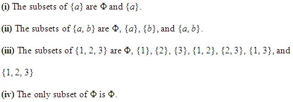
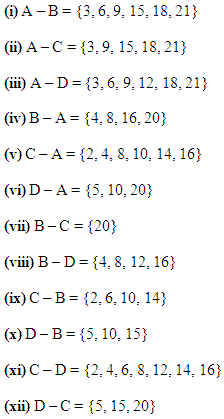
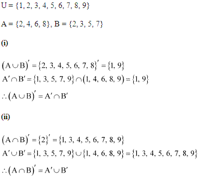
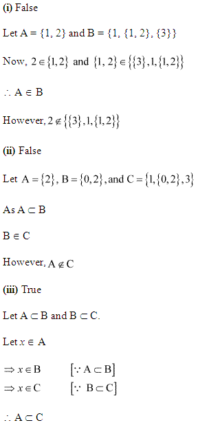

In NCERT Solutions for class 11 Maths Chapter 1 Sets, you will learn about the description of a Set, types of sets, subsets, concepts of subsets, Venn Diagrams, Operations on Sets using Venn Diagrams, Laws of Algebra of sets, some important results on number of elements in sets.
Free download NCERT Solutions for Class 11 Maths Chapter 1 Sets Ex 1.1, Ex 1.2, Ex 1.3, Ex 1.4, Ex 1.5, Ex 1.6 and Miscellaneous Exercise PDF in Hindi Medium as well as in English Medium for CBSE, Uttarakhand, Bihar, MP Board, Gujarat Board, BIE, Intermediate and UP Board students, who are using NCERT Books based on updated CBSE Syllabus for the session 2019-20.
Topics and Subtopics in Class 11 Maths NCERT Solutions Chapter 1 Sets
| Section Name | Topic Name |
| 1 | Sets |
| 1.1 | Introduction |
| 1.2 | Sets and their Representations |
| 1.3 | The Empty Set |
| 1.4 | Finite and Infinite Sets |
| 1.5 | Subsets |
| 1.6 | Power Set |
| 1.7 | Universal Set |
| 1.8 | Venn Diagrams |
| 1.9 | Operations on Sets |
| 1.10 | Complement of a Set |
| 1.11 | Practical Problems on Union and Intersection of Two Sets |
| 1.12 | Summary |
NCERT Solutions for Class 11 Maths Chapter 1 Sets
- Class 11 Sets Ex 1.1
- Class 11 Sets Ex 1.1 in Hindi Medium
- Class 11 Sets Ex 1.2
- Class 11 Sets Ex 1.2 Hindi Medium
- Class 11 Sets Ex 1.3
- Class 11 Sets Ex 1.3 Hindi Medium
- Class 11 Sets Ex 1.4
- Class 11 Sets Ex 1.4 Hindi Medium
- Class 11 Sets Ex 1.5
- Class 11 Sets Ex 1.5 Hindi Medium
- Class 11 Sets Ex 1.6
- Class 11 Sets Ex 1.6 Hindi Medium
- Class 11 Sets Miscellaneous Exercise
- Class 11 Sets Miscellaneous Exercise in Hindi Medium
- Sets Class 11 Notes Maths Chapter 1
- NCERT Exemplar Class 11 Maths Chapter 1 Sets
- RD Sharma Class 11 Solutions Chapter 1 Sets
- Chapter 1: Sets Class 11 NCERT Book
- अध्याय 1: समुच्चय Class 11 NCERT Book
Class 11 Maths NCERT Solutions Chapter 1 Sets Ex 1.1
Ex 1.1 Class 11 Maths Q.1: Which of the following are sets. Explain your answer.
(a). The collection of all day in a week which have the first letter S.
(b). The collection of ten most famous singers of India.
(c). A group of best football strikers of the world.
(d). The collection of all girls in your school.
(e). The collection of all odd numbers below 50.
(f). A collection of poems written by the poet Shakespeare.
(g). The collection of all prime numbers.
(h). The collection of questions in science book.
(i). A collection of most dangerous reptiles in India.
Solution:
(i) The collection of all months of a year beginning with the letter J is a well-defined collection of objects because one can definitely identity a month that belongs to this collection. Hence, this collection is a set.
(ii) The collection of ten most talented writer of India is not a well-defined collection because the criteria for determining a writer’s talent vary from person to person. Hence, this collection is not a set.
(iii) A team of eleven best cricket batsmen of the world is not a well-defined collection because the criteria for determining a batsman’s talent may vary from person to person. Hence, this collection is not a set.
(iv) The collection of all boys in your class is a well-defined collection because you can definitely identify a boy who belongs to this collection. Hence, this collection is a set.
(v) The collection of all natural numbers less than 100 is a well-defined collection because one can definitely identify a number that belongs to this collection. Hence, this collection is a set.
(vi) A collection of novels written by the writer Munshi Prem Chand is a well-defined collection because one can definitely identify a book that belongs to this collection. Hence, this collection is a set.
(vii) The collection of all even integers is a well-defined collection because one can definitely identify an even integer that belongs to this collection.
Hence, this collection is a set.
(viii) The collection of questions in this chapter is a well-defined collection because one can definitely identify a question that belongs to this chapter. Hence, this collection is a set.
(ix) The collection of most dangerous animals of the world is not a well-defined collection because the criteria for determining the dangerousness of an animal can vary from person to person. Hence, this collection is not a set.
Ex 1.1 Class 11 Maths Q.2: Let P = {2, 3, 4, 5, 6, 7}. Insert the correct symbol ∈or∉ inside the given blank spaces below:
(a). 2 . . . . . . . . . . P
(b). 9 . . . . . . . . . P
(c). 11 . . . . . . . . P
(d). 4 . . . . . . . . P
(e). 0 . . . . . . . . P
(f). 7 . . . . . . . . P
Solution:
(i) 5 ∈ A
(ii) 8 ∉ A
(iii) 0 ∉ A
(iv) 4 ∈ A
(v) 2 ∈ A
(vi) 10 ∉ A
Ex 1.1 Class 11 Maths Q.3: Write the given sets in roster form:
(a). P = {y: y is an integer and -4 < y < 6}.
(b). Q = {y: y is a natural number which is <8}
(c). R = {y: y is a 2 digit natural number in which the sum of its digits is 9}
(d). S = {y: y is a prime number which is a divisor of 70}
(e). T = The set of all letters in the word ELEPHANT
(f). U = The set of all letters in the word DIVISION
Solution:
(i) A = {x: x is an integer and –3 < x < 7}
The elements of this set are –2, –1, 0, 1, 2, 3, 4, 5, and 6 only.
Therefore, the given set can be written in roster form as
A = {–2, –1, 0, 1, 2, 3, 4, 5, 6}
(ii) B = {x: x is a natural number less than 6}
The elements of this set are 1, 2, 3, 4, and 5 only.
Therefore, the given set can be written in roster form as
B = {1, 2, 3, 4, 5}
(iii) C = {x: x is a two-digit natural number such that the sum of its digits is 8}
The elements of this set are 17, 26, 35, 44, 53, 62, 71, and 80 only.
Therefore, this set can be written in roster form as
C = {17, 26, 35, 44, 53, 62, 71, 80}
(iv) D = {x: x is a prime number which is a divisor of 60}
| 2 | 60 |
| 2 | 30 |
| 3 | 15 |
| 5 |
∴60 = 2 × 2 × 3 × 5
The elements of this set are 2, 3, and 5 only.
Therefore, this set can be written in roster form as D = {2, 3, 5}.
Ex 1.1 Class 11 Maths Q.4: Write the given sets in set-builder form:
(a). {4, 8, 12, 16, 20}
(b). {3, 9, 27, 81}
(c). {4, 16, 64, 256, 1024}
(d). {1, 3, 5, 7…}
(e). {1, 8, 27, 64….1000}
Solution:
Ex 1.1 Class 11 Maths Q.5: List all the elements from the given sets:
(a). P = {y: y is even natural number}
(b). Q = {y: y is an integer, \(\\ \frac { -1 }{ 2 } \)<y<\(\\ \frac { 9 }{ 2 } \)}
(c). R = {y: y is an integer; y²≤4}
(d). S = {y: y is letter in the word “TIFFIN”}
(e). T = {y: y is a month of a year having 31 days}
(f). U = {y: y is a consonant in the English alphabet which precedes m}
Solution:
Ex 1.1 Class 11 Maths Q.6: Match the following:
| (A) | {1, 2, 3, 6} | (i) | {y: y is a divisor of 6 and also a prime number} |
| (B) | {T, R, I, G, O, N, M, E, Y} | (ii) | {y: y is less than 10 and also an odd number} |
| (C) | {2, 3} | (iii) | {y: y is natural number divisor of 6} |
| (D) | {1, 3, 5, 7, 9} | (iv) | {y: y is a letter of the word TRIGONOMETRY} |
Solution:
NCERT Solutions for Class 11 Maths Chapter 1 Sets (समुच्चय) Ex 1.1 in Hindi

Class 11 Maths NCERT Solutions Chapter 1 Sets Ex 1.2
Ex 1.2 Class 11 Maths Q.1: Which of the following given below is null set?
(i). Set of odd natural numbers which is divisible by 2.
(ii). Set of even numbers which are prime
(iii). {x: x is a natural number, x<5 and x>7}
(iv). {y: y is a point common to any two parallel lines}
Solution:
Ex 1.2 Class 11 Maths Q.2: State whether the following sets are infinite or finite:
(i). A set of months of a year.
(ii). {1, 2, 3 ….}
(iii). {1, 2, 3…99, 100}
(iv). The set of positive integers which are greater than 100.
(v). The set of prime numbers which are less than 99
Solution:
Ex 1.2 Class 11 Maths Q.3: State whether the following sets are infinite or finite:
(i). The set of lines parallel to the x – axis.
(ii). The set of letters in the vowels.
(iii). The set of numbers multiple of 10.
(iv). The set of humans living on Earth.
(v). The set of circles passing through the origin (0, 0).
Solution:
Ex 1.2 Class 11 Maths Q.4: In the following set given below, state whether A = B or not:
(i). A = {w, x, y, z}
B = {z, y, x, w}
(ii). A = {5, 9, 13, 17}
B = {9, 5, 17, 19}
(iii). A = {4, 2, 6, 10, 8}
B = {x: x is positive even integer and x≤10 }
(iv). A = {x: x is a multiple of 10}
B = {10, 15, 20, 25, 30 …}
Solution:
Ex 1.2 Class 11 Maths Q.5 In the following set given below, is the pair of sets equal?
(i). A = {3, 4}
B = {y: y is solution of y²+5y+6=0}
(ii). A = {a: a is a letter in the word FOLLOW}
B = {b: b is a letter in the word WOLF}
Solution:
Ex 1.2 Class 11 Maths Q.6: From the following sets, select equal sets:
A = {2, 4, 8, 12}
B = {1, 2, 3, 4}
C = {4, 8, 12, 14}
D = {3, 1, 4, 2}
E = {–1, 1}
F = {0, a}
G = {1, –1}
H = {0, 1}
Solution:
Class 11 Maths NCERT Solutions Chapter 1 Sets Ex 1.3
Ex 1.3 Class 11 Maths Q.1: Fill in the blanks properly using ⊂ and ⊄.
(i). {3, 4, 5} ____ {2, 3, 4, 5, 6}
(ii). {a, b, c} ____ {d, c, d}
(iii). {y: y is a pupil of Class 11 of the school} ____ {y: y is students of the school}
(iv). {y: y is a circle in the plane} ____ {y: y is a circle in the same plane with radius 2 unit}
(v). {y: y is an equilateral triangle in a plane} ____ {y: y is a rectangle in the same plane}
(vi). {y: y is an equilateral triangle in a plane} ____ {y: y is a triangle in the plane}
(vii). {y: y is an odd natural number} ____ {x: x is an integers}
Solution:
Ex 1.3 Class 11 Maths Q.2: State whether the given statements are true or false:
(i). {b, c} ⊄ {c, d, e}
(ii). {a, e, i} ⊂ {x: x is a vowel in the English alphabets}
(iii). {1, 2, 3} ⊂{1, 2, 4, 5}
(iv). {c} ⊂ {b, c, d}
(v). {b} ∈ {a, b, c, d}
(vi). {y: y is an even natural no. less than 6} ⊂ {y: y is a natural no. which can divide 36}
Solution:
Ex 1.3 Class 11 Maths Q.3: Let X = {11, 12, {13, 14}, 15}. According to the given set which of the given statements are false? Explain why.
(i). {13, 14} ⊂ X
(ii). {13, 14} ∈ X
(iii). {{13, 14}} ⊂ X
(iv). 11 ∈ X
(v). 11 ⊂ X
(vi). {11, 12, 15} ⊂ X
(vii). {11, 12, 15} ∈ X
(viii). {11, 12, 13} ⊂ X
(ix). Ø ∈ X
(x). Ø ⊂ X
(xi). {Ø} ⊂ X
S
Ex 1.3 Class 11 Maths Q.4: Write all the subsets of the given sets:
(i). {b}
(ii). {b, c}
(iii). {2, 3, 4}
(iv). Ø
Solution:

Ex 1.3 Class 11 Maths Q.5: How many elements has P(X), if X = Ø ?
Solution:

Ex 1.3 Class 11 Maths Q.6: Write the given in the form of intervals:
(i). {y: y ∈ R, –5 < y ≤ 7}
(ii). {y: y ∈ R, –13 < y < –11}
(iii). {y: y ∈ R, 1 ≤ y < 8}
(iv). {y: y ∈ R, 4 ≤ y ≤ 5}
Solution:
Ex 1.3 Class 11 Maths Q.7: Write the given intervals in the form of set – builder:
(i). (–4, 1)
(ii). [7, 13]
(iii). (7, 13]
(iv). [–24, 6)
Solution:
Ex 1.3 Class 11 Maths Q.8: What universal set/ sets would you propose for the given sets?
(i). The set of right triangles
(ii). The set of isosceles triangles
Solution:
Ex 1.3 Class 11 Maths Q.9: X = {1, 3, 5}, Y = {2, 4, 6} and Z = {0, 2, 4, 6, 8}
Which of the given sets can be considered as the universal set for the given sets X, Y and Z?
(i). {0, 1, 2, 3, 4, 5, 6}
(ii). Ø
(iii). {0, 1, 2, 3, 4, 5, 6, 7, 8, 9, 10}
(iv). {1, 2, 3, 4, 5, 6, 7, 8}
Solution:
Class 11 Maths NCERT Solutions Chapter 1 Sets Ex 1.4
Ex 1.4 Class 11 Maths Q.1: Find the union of each of the following pairs of sets:
(i). P = {1, 4, 6} and Q = {1, 3, 4}
(ii). X = {a, e, i, o, u} and Y = {x, y, z}
(iii). X = {x: x is a natural number and multiple of 3} and Y = {x: x is a natural number less than 6}
(iv). X = {x: x is a natural number and 1 < x ≤ 5} and Y = {x: x is a natural number and 5 < x < 10}
(v). X = {4, 5, 6} and Y = Φ
Solution:
Ex 1.4 Class 11 Maths Q.2: Let A = {x, y} and B = {x, y, z}
Is A ⊂ B? What is A ∪ B?
Solution:
Ex 1.4 Class 11 Maths Q.3: If X and Y are two sets such that X ⊂ Y, then what is X ∪ Y?
Solution:
Ex 1.4 Class 11 Maths Q.4: If P = {1, 2, 3, 4}, Q = {3, 4, 5, 6}, R = {5, 6, 7, 8} and S = {7, 8, 9, 10}
Find the following:
(i). P ∪ Q
(ii). P ∪ R
(iii). Q ∪ R
(iv). Q ∪ S
(v). P ∪ Q ∪ R
(vi). P ∪ Q ∪ S
(vii). Q ∪ R ∪ S
Solution:
Ex 1.4 Class 11 Maths Q.5: Find the intersection of each of the following pairs of sets:
(i). P = {1, 4, 6} and Q = {1, 3, 4}
(ii). X = {a, e, i, o, u} and Y = {x, y, z}
(iii). X = {x: x is a natural number and multiple of 3} and Y = {x: x is a natural number less than 6}
(iv). X = {x: x is a natural number and 1 < x ≤ 5} and Y = {x: x is a natural number and 5 < x < 10}
(v). X = {4, 5, 6} and Y = Φ
Solution 5:
Ex 1.4 Class 11 Maths Q.6: If A = {3, 5, 7, 9, 11}, B = {7, 9, 11, 13}, C = {11, 13, 15} and D = {15, 17}
Find the following:
(i). A ∩ B
(ii). B ∩ C
(iii). A ∩ C ∩ D
(iv). A ∩ C
(v). B ∩ D
(vi). A ∩ (B ∪ C)
(vii). A ∩ D
(viii). A ∩ (B ∪ D)
(ix). (A ∩ B) ∩ (B ∪ C)
(x). (A∪ D) ∩ (B ∪ C)
Solution:
Ex 1.4 Class 11 Maths Q.7: If A = {y: y is a natural number}, B ={y: y is an even natural number}, C = {y: y is an odd natural number} and D = {y: y is a prime number}
Find the following:
(i). A ∩ B
(ii). A ∩ C
(iii). A ∩ D
(iv). B ∩ C
(v). B ∩ D
(vi). C ∩ D
Solution 7:
Ex 1.4 Class 11 Maths Q.8: Which of the given pairs of sets are disjoint?
(i). A = {1, 2, 3, 4} and B = {x: x is a natural number and 4 ≤ x ≤ 6}
(ii). A = {a, e, i, o, u} and B = {c, d, e, f}
(iii). A = {x: x is an even integer} and B = {x: x is an odd integer}
Solution:
Ex 1.4 Class 11 Maths Q.9: If A = {3, 6, 9, 12, 15, 18, 21}, B = {4, 8, 12, 16, 20}, C = {2, 4, 6, 8, 10, 12, 14, 16} and D = {5, 10, 15, 20}
Find the following:
(i). A – B
(ii). A – C
(iii). A – D
(iv). B – A
(v). C – A
(vi). D – A
(vii). B – C
(viii). B – D
(ix). C – B
(x). D – B
(xi). C – D
(xii). D – C
Solution 9:

Ex 1.4 Class 11 Maths Q.10: If X = {a, b, c, d} and Y = {f, b, d, g}
Find the following:
(i). X – Y
(ii). Y – X
(iii). X ∩ Y
Solution:
Ex 1.4 Class 11 Maths Q.11: What is R – Q, if R is the set of real numbers and Q is the set of rational?
Solution:

Ex 1.4 Class 11 Maths Q.12: State whether the following statements are true or false. Give reason.
(i). A = {2, 3, 4, 5} and B = {3, 6} are disjoint sets.
(ii). A = {a, e, i, o, u } and B = {a, b, c, d} are disjoint sets.
(iii). A = {2, 6, 10, 14} and B = {3, 7, 11, 15} are disjoint sets.
(iv). A = {2, 6, 10} and B = {3, 7, 11} are disjoint sets.
Solution:
NCERT Solutions for Class 11 Maths Chapter 1 Sets Ex 1.5
Ex 1.5 Class 11 Maths Q.1: Let U = {1, 2, 3, 4, 5, 6, 7, 8, 9}
X = {1, 2, 3, 4, 5}
Y = {2, 4, 6} and
Z = {2, 4, 5, 6}.
Find the following sets:
(i). X’
(ii). Y’
(iii). (X∪Y)′
(iv). (X∪Z)′
(v). (X′)‘
(vi). (Y–Z)′
Solution:
Ex 1.5 Class 11 Maths Q.2: If U = {a, b, c, d, e, f, g, h}, find the complements of the given sets:
(i). W = {a, b, c}
(ii). X = {d, e, f, g}
(iii). Y = {a, c, e, g}
(iv). Z = {f, g, h, a}
Solution:
Ex 1.5 Class 11 Maths Q.3: Take natural numbers as the universal set. Write the complements of the given sets:
(i). A = {y: y is an even natural number}
(ii). B = {y: y is an odd natural number}
(iii). C = {y: y is a positive multiple of 3}
(iv). D = {y: y is a prime number}
(v). E = {y: y is a natural number divisible by 3 and 5}
(vi). F = {y: y is a perfect square}
(vii). G = {y: y is perfect cube}
(viii). H = {y: y + 5 = 8}
(ix). I = {y: 2y + 5 = 9}
(x). J = {y: y ≥ 7}
(xi). K = {y: y ∈ N and 2y + 1 > 10}
Solution:
Ex 1.5 Class 11 Maths Q.4: If U = {1, 2, 3, 4, 5,6,7,8, 9}
A = {2, 4, 6, 8} and, B = {2, 3, 5, 7}.
Verify that:
(i). (A∪B)′ = A′∩B′
(ii). (A∩B)′ = A′∪B′
Solution:

Ex 1.5 Class 11 Maths Q.5: Draw the Venn diagrams for the following:
(i). (A∪B)′
(ii). A′∩B′
(iii). (A∩B)′
(iv). A′∪B′
Solution:
Ex 1.5 Class 11 Maths Q.6: Let U be the universal set that is the set of all triangles in a plane. If X is the set of all triangles with at least one angle different from 60∘, what is X’ ?
Solution:
Ex 1.5 Class 11 Maths Q.7: Complete the given statements using proper symbols:
(i). A∪A′
(ii). Ø ∩A
(iii). A∩A′
(iv). U′∩A
Solution:
NCERT Solutions for Class 11 Maths Chapter 1 Sets Ex 1.6
Ex 1.5 Class 11 Maths Q.1: If A and B are two sets such that n(A) = 16, n(B) = 24 and n(A∪B) = 39. Find n(A∩B).
Solution:
Ex 1.6 Class 11 Maths Q.2: If A and B are two sets such that A∪B has 17 elements, A has 9 elements and B has 14 elements. How many elements does A∩B have?
Solution:

Ex 1.6 Class 11 Maths Q.3: In a group there are 450 people, 200 speaks Hindi and 270 can speak English. How many people can speak Ex both English and Hindi?
Solution:

Ex 1.6 Class 11 Maths Q.4: If X and Y are two sets such that X has 22 elements, Y has 34 elements, and n(X∩Y) has 10 elements, how many elements does n(X∪Y) have?
Solution:
Ex 1.6 Class 11 Maths Q.5: If A and B are two sets such that A has 45 elements, n (A ∩ B) has 15 elements and n (A ∪ B) has 70 elements, how many elements does B have?
Solution:
Ex 1.6 Class 11 Maths Q.6:There are 70 people, out of which 35 like tea, 55 like coffee, and each person likes at least one of the two beverages. How many people like both tea and coffee?
Solution:
Ex 1.6 Class 11 Maths Q.7: There are 70 students in a group, 35 like cricket, 15 like both tennis and cricket. How many like tennis only and not cricket? How many like tennis?
Solution:
Ex 1.6 Class 11 Maths Q.8: In a committee, 60 people speak French, 30 speak Spanish and 20 speak both Spanish and French. How many speak at least one of these two languages?
Solution:
NCERT Solutions for Class 11 Maths Chapter 1 Sets Miscellaneous Exercise
Solution 1:
Solution 2:

Solution 3:
Solution 4:
Solution 5:
Solution 6:
Solution 7:
Solution 8:
Solution 9:
Solution 10:

Solution 11:
Solution 12:
Solution 13:
Solution 14:
Solution 15:
Solution 16:
NCERT Solutions for Class 11 Maths Chapter 1 Sets Ex 1.1 in Hindi
Ex 1.1 Class 11 Maths प्रश्न 1.
निम्नलिखित में कौन से समुच्चय हैं? अपने उत्तर का औचित्य बताइए।
(i) j अक्षर से प्रारम्भ होने वाले वर्ष के सभी महीनों का संग्रह।
(ii) भारत के दस सबसे अधिक प्रतिभाशाली लेखकों का संग्रह।
(iii) विश्व के सर्वश्रेष्ठ ग्यारह बल्लबाजों का संग्रह।
(iv) आप की कक्षा के सभी बालकों का संग्रह।
(v) 100 से कम सभी प्राकृत संख्याओं का संग्रह।
(vi) लेखक प्रेमचन्द द्वारा लिखित उपन्यासों का संग्रह।
(vii) सर्भीसम पूर्णाकों का संग्रह।
(viii) इस अध्याय में आने वाले प्रश्नों का संग्रह।
(ix) विश्व में सबसे अधिक खतरनाक जानवरों का संग्रह।
हल:
(i) j से शुरु होने वाले महीनों के नाम : जनवरी, जून व जुलाई। अतः यह एक समुच्चय है।
(ii) प्रतिभाशाली लेखक को परिभाषित नहीं किया जा सकता। इसीलिए यह एक समुच्चय नहीं है।
(iii) सर्वश्रेष्ठ बल्लेबाज को परिभाषित नहीं कर सकते। अतः यह एक समुच्चय नहीं है।
(iv) कक्षा के सभी विद्यार्थियों की संख्या निश्चित होती है। अतः यह एक समुच्चय है।
(v) 100 से कम प्राकृत संख्याएँ 1, 2, 3, …….. 99 हैं। अतः यह एक समुच्चय है।
(vi) लेखक प्रेमचन्द्र द्वारा लिखित उपन्यासों का संग्रह गबन, गोदान आदि द्वारा परिभाषित हैं। अतः यह एक समुच्चय है।
(vii) समपूर्णांक {….. -6, -4. 2, 4, 6, ….} हैं। इसलिए यह एक समुच्चय है।
(viii) इस अध्याय के प्रश्न परिभाषित हैं। अतः यह एक समुच्चय है।
(ix) संसार के सबसे अधिक खतरनाक पशुओं के संग्रह को परिभाषित नही किया जा सकता। इसलिए यह एक समुच्चय नहीं है।
Ex 1.1 Class 11 Maths प्रश्न 2.
मान लीजिए A = {1, 2, 3, 4, 5, 6}. रिक्त स्थानों में उपयुक्त प्रतीक ∈अथवा ∉ भरिए।
(i) 5 …… A
(ii) 8 …….. A
(iii) 0 ……… A
(iv) 4 ……. A
(v) 2 …….. A
(vi) 10 ……. A
हल:
(i) 5 ∈ A
(ii) 8 ∉ A
(iii) 0 ∉ 4
(iv) 4 ∈ A
(v) 2 ∈ A
(vi) 10 ∉ A
Ex 1.1 Class 11 Maths प्रश्न 3.
निम्नलिखित समुच्चयों को रोस्टर रूप में लिखिए:
(i) A = {x : x एक पूर्णाक है और -3 < x < 7}
(ii) B = {x : x संख्या 6 से कम एक प्राकृत संख्या है।}
(iii) C = {x : x दो अंको की ऐसी प्राकृत संख्या है जिसके अंकों का योगफल 8 है।}
(iv) D = {x : x एक अभाज्य संख्या है जो 60 की भाजक है।
(v) E = TRIGONOMETRY शब्द के सभी अक्षरों का समुच्चय
(vi) F = BETTER शब्द के सभी अक्षरों क़ा समुच्च्य
हल:
(i) A = {-2, -1, 0, 1, 2, 3, 4, 5, 6}
(ii) B = {1, 2, 3, 4, 5}
(iii) C = {17, 26, 35, 44, 53, 62, 71, 80}
(iv) D = {2, 3, 5}
(v) E = {T, R, I, G, O, N, M, E, Y}
(vi) F = {B, E, T, R}
Ex 1.1 Class 11 Maths प्रश्न 4.
निम्नलिखित समुच्चयों को समुच्चय निर्माण रूप में व्यक्त कीजिए:
(i) {3, 6, 9, 12}
(i) {2, 4, 8, 16, 32}
(iii) {5, 25, 125, 625}
(iv) {2, 4, 6, ….}
(v) {1, 4, 9, ……100}
हल:
(i) {x : x = 3n और 1 ≤ n ≤ 4}
(ii) {x : x = 2n और 1 ≤ n ≤ 5}
(iii) {x : x = 5 और 1 ≤ n ≤ 4}
(iv) {x : x एक सम प्राकृत संख्या है।}
(v) {x : x = n², 1 ≤ n ≤ 10}
Ex 1.1 Class 11 Maths प्रश्न 5.
निम्नलिखित समुच्चयों के सभी अवयवों (सदस्यों) को सूचीबद्ध कीजिए।
(i) A = {x : x एक विषम प्राकृत संख्या है।
(i) B = x : x एक पूर्णाक है, \(\frac { -1 }{ 2 }\) < x < \(\frac { 9 }{ 2 }\)}
(iii) C = {x : x एक पूर्णाक है, x² ≤ 4}
(iv) D = {x : x, LOYAL शब्द का एक अक्षर है।}
(v) F = {x : x वर्ष का एक ऐसा महीना है, जिसमें 31 दिन नहीं होते हैं।}
(vi) F = {x : x अंग्रेजी वर्णमाला का एक व्यंजन है, जो k से पहले आता है।}
हल:
(i) A = {1, 3, 5, 7, ……….}
(ii) B = { 0, 1, 2, 3, 4}
(iii) C = {-2, – 1, 0, 1, 2}
(iv) D = {L, O, Y, A}
(v) E = {फरवरी, अप्रैल, जून, सितम्बर, नवम्बर}
(vi) F = {b, c, d, f, g, h, j}
Ex 1.1 Class 11 Maths प्रश्न 6.
बाई ओर रोस्टर रूप में लिखित और दाईं ओर समुच्चय निर्माण रूप में वर्णित समुच्चयों का सही मिलान कीजिए।
(i) {1, 2, 3, 6} (a) {x : x एक अभाज्य संख्या है और 6 की भाजक है।
(ii) {2, 3} (b) {x : x संख्या 10 से कम एक विषम प्राकृत संख्या है।
(iii) {M, A, T, H, E, I, C, S} (c) {x : x एक प्राकृत संख्या है और 6 की भाजक है।
(iv) {1, 3, 5, 7, 9} (d) {x : x MATHEMATICS शब्द का एक अक्षर है:
हल:
(i) → (c)
(ii) → (a)
(iii) → (d)
(iv) → (b)
NCERT Solutions for Class 11 Maths All Chapters
- Chapter 1 Sets
- Chapter 2 Relations and Functions
- Chapter 3 Trigonometric Functions
- Chapter 4 Principle of Mathematical Induction
- Chapter 5 Complex Numbers and Quadratic Equations
- Chapter 6 Linear Inequalities
- Chapter 7 Permutation and Combinations
- Chapter 8 Binomial Theorem
- Chapter 9 Sequences and Series
- Chapter 10 Straight Lines
- Chapter 11 Conic Sections
- Chapter 12 Introduction to Three Dimensional Geometry
- Chapter 13 Limits and Derivatives
- Chapter 14 Mathematical Reasoning
- Chapter 15 Statistics
- Chapter 16 Probability